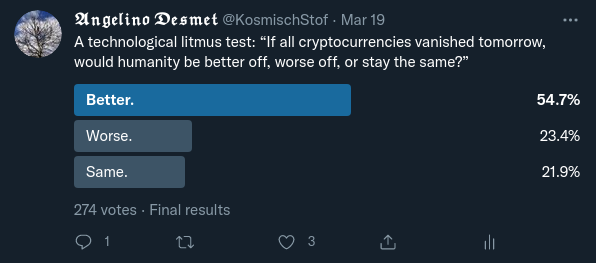

An archive of (my) reddit comments that are worth something to me; in case I delete my accounts on these increasingly unethical websites.
CynicusRex, 2 points:
Realize you will not miss out on anything. Even if the world does somehow adopt pyramid Ponzi schemes as currency, truly smart and wise people will still continue to live virtuously, regardless of the type of “money” they have to deal with; as long as they have a roof over their head and the means to support their family.
“Study to be accomplished, not affluent.” —3 Idiots
– – – – – –
* Fear of missing out.
♔
↳︎ Reverend_Decepticon, -3 points:
This is complete bullshit. Everyone is trying to blame Elon for their problems. He advised everyone, cautioned people, and did everything he could to tell people because I suspect he realized that it was a pump and dump. Then as it starts dropping, Robinhood pulls their usual crap and shuts down trading and forced all their customers to take a loss. You knew who you were dealing with when you bought on Robinhood. If you don't see through this ignorance then your a 🤡 and to blame Elon is just a scapegoat. Put the blame where it belongs. It's clearly the "usual suspects"
CynicusRex, 7 points:
“He advised everyone, cautioned people, and did everything he could to tell people because I suspect he realized that it was a pump and dump.”
What wishy-washy nonsense. If Elon was less of a businessman and more of a scientist like Carl Sagan, or a virtuous leader like Marcus Aurelius, then he'd completely rail against these crypto token pyramid Ponzi schemes.
♔
CynicusRex, 1701 points:
The world has become a parody of itself; characterized by excessive speculation but moral bankruptcy. Societies that revere the rich and famous before the frugal and wise are on a fast-track toward demise. Admire virtue, not vanity.
It seems that due to corona lockdowns humanity has been put on a fast-track to collectively losing their minds. Finance already had way too big of an influence on the workings of society, and this effect has been put into overdrive. Scrutiny is out the window, scam or not, as long as there's potential profit. Now imagine a society that purely consists of speculators and influencers, producing nothing of value. It seems we're going that way; a societal mix of Wall-E and Idiocracy, addicted to entertainment and money. Those people will think they're free, but will in fact be entirely dependent on countries that produce nearly everything in the world.
I'm not going to mention any country because I believe in a Cosmopolitan future, so I don't care who it is. However, before we get to such a place, it seems it will be preceded by significant turbulence. Pardon my perhaps unsubstantiated or hyperbolic claims, but that's what I'm seeing at the moment.
↳︎ 2022FAMINE, 107 points:
Does anyone ever discuss the future they want to see anymore?
I honestly think the vast majority of humanity needs to revert back. We don't NEED any of this BS. Especially in America. Personal cars, new clothes every season, Keurigs, juicers, new appliances every 5 years... it's a mess.
But at the same time I don't want new technology to die out. It needs to move forward where it actually matters: in transportation, space travel, efficiency...
The entire nation can't technologically progress at the same rate as technology is invented. It needs to be self-sufficient. It needs to be understandable and maintainable. for the vast majority, it needs to be somewhat stagnant.
The traditional appliance didn't need any improvement after 1970. Sure, we can make them mechanically more efficient, but it's unnecessary to give them touch screens and computers...
idk, maybe that makes me a luddite.
CynicusRex, 52 points:
Being against planned obsolescence is the opposite of being a Luddite.
I wholeheartedly agree with you. I think it's absurd to own a car (or anything) if it just sits there probably north of ninety percent of its lifetime. And it makes the urban environment dangerous and aesthetically extremely unpleasant. Cars are just a means of transportation, that's it. The status symbol that comes with it should be ridiculed, just like Elon Muskuito and all the other corrupted multimillionaires who manipulate the populace through marketing and advertising into wanting the things they're selling. Yes, I realize people have to travel to work, but that's another thing that we could do less of. The normalization of dedicating one's life to work, and not one's family or tight-knit community of friends and neighbours. I mean seriously, isn't it ridiculous that people spend more time with their co-workers rather than friends and family?
Anyway, all of this needs extensive nuance and tons of tangents. But it's good to get the ball rolling. We earthlings must do better; especially we privileged greedy Westerners.
↳︎↳︎ PhallusGreen, 10 points:
Plenty of things are unused most of the time. A house or apartment is empty the majority of each day. Cars, public roads, public transit, etc are never utilized even close to 100%. Certain roads in America are utilized to less than 10% of maximum capacity regularly. Even major highways are optimized for rush hour so the majority of the time the are not fully utilized. Bike lanes in most places are nearly empty the majority of the day.
Every pair of clothing you own is in the closet 90+% of the time rather than being worn. If you own a bicycle it’s going to be parked over 90% of the time too unless bicycling is part of your job.
Good luck getting any sort of ride share working on a large scale as the time you’re going to be using your car is the time someone else probably wants to use the car too.
CynicusRex, 27 points:
“A house or apartment is empty the majority of each day.”
Yes, and I've got a problem with that too. Why work so much to pay off a house you're not going to spend the majority of your time in? Not that I'm against owning a home—this topic requires much nuance—I'm merely pointing out a flaw in our current system. Owning X or Y is sensible for some, but not everyone. But thanks to marketing, advertising, archaic traditions, or peer pressure, people who could absolutely do without are being ostracized and almost coerced into the rat race. No wonder Western society is popping pills like no other.
“Every pair of clothing you own is in the closet 90+%”
That's why I rarely buy clothes.
“bicycle it’s going to be parked over 90%”
Bicycles are cheap, they don't pollute, they're silent, you can put them inside your home, they're good for your health, they're far less of a death sentence in a collision, and they're not visually disturbing as cars unless there aren't enough bicycle racks.
❦
↳︎ nariusone, 3 points:
What parody? The world .. the human consumption ... has been growing exponentially through the history of mankind. The only reason why some may raise the red flag is only because we start to hit, or approach hitting, the natural limit (like over-fishing).
We are not doing anything different. In fact, we are doing exactly how we were "programmed" by evolution. Just that circumstances change (i.e. hitting limits) and evolution is too slow to respond.
CynicusRex, 18 points:
“What parody? The world .. the human consumption ... has been growing exponentially through the history of mankind.”
Native Americans were doing perfectly fine before rich white men stole everything and spread their greed like cancer. Humans are not the problem, rich white greed is.
“European colonization of the Americas, which began in 1492, resulted in a precipitous decline in Native American population because of new diseases to which they had no immunity, wars, ethnic cleansing, and enslavement. After its formation, the United States, as part of its policy of settler colonialism, continued to wage war and perpetrated massacres against many Native American peoples, removed them from their ancestral lands, and subjected them to one-sided treaties and to discriminatory government policies, later focused on forced assimilation, into the 20th century.” —https://en.wikipedia.org/wiki/Native_Americans_in_the_United_States
↳︎↳︎ [deleted], 3 points:
White men descending from the Roman Empire. I wonder where this greed and thirst of power cames from. The Imperial ideology born in the middle of Europe it's like a cancer that destroyed everything. Every civilization conquered has become a nightmare or a dystopian country since the existence of the Roman Empire or even before. I wonder if this is a consequence of hybridation with some brutal and evil evolved human race at the beginning of the civilisation in some areas of the world.
CynicusRex, 9 points:
Sounds farfetched, but perhaps it's actually the simplest explanation yet—Occam's razor. If there are certain tribes that are genetically superior in long distance running, then there also could be people who are genetically prone to greed and feelings like fear of missing out (FOMO).
❦
↳︎ Sumnerr, 180 points:
I love the sentiment and I can't help but laugh a little that it is in TweetTM form.
CynicusRex, 163 points:
Just in case I want to make an NFT from it and sell it for fifty trillion Lindsey Lohan coins. I hate the previous sentence.
❦
↳︎ makemeanameplz257, -2 points:
Most likely true. But you have to be an absolute fucking idiot to stay in the dollar right now. Not only have they been fucking you in the ass with hidden inflation for decades, they are about to ramp their game up. So if you are from the generation of “pUt MoNeY iN a SaVinGs AcCouNt”, you are going to get wiped the fuck out. Real assets, crypto and precious metals are the way.
CynicusRex, 31 points:
Don't touch crypto“currencies” for they are a mix of pyramid schemes and ponzi schemes rife with fraud, scams, and prices that are artificially inflated with other imaginary tokens. The only thing it does is incentivize greed and increase the wealth inequality even more.
Money corrupts; bitcoin corrupts absolutely.
“Any new “currency” or speculative digital token that doesn't have a fair distribution mechanism is a multi-level marketing pyramid scheme by default. Hence, not a currency. The earliest adopters of such flawed contrivances will always have an increasingly disproportionate amount of the total wealth as it gets adopted. Early adopters mine or buy large proportions of the total supply at negligible costs while late adopters mine or buy negligible proportions at large costs. It follows that holders immediately have every incentive to get as many people to buy after them.”
“Disregarding all of bitcoin's shortcomings, a financial instrument that brings out the worst in people—greed—won't change the world for the better.” —https://www.cynicusrex.com/file/cryptocultscience.html
↳︎↳︎ makemeanameplz257, -8 points:
No.
First of all, the biggest pyramid scheme is the USD. By far.
Second, you must have limited knowledge about what is going on in the economy (for decades now) as well as what defi is.
Will crypto contribute to the wealth divide? Absolutely. Maybe even as much as their scam dollar. However, this is your only opportunity to actually be on the other side of that wealth divide. Or you can keep punching that time clock for $25 an hour making boss man rich while your purchasing ability decreases from the 3% it currently is, to zero. All the while your hard work is funding the pet projects and outright fraud of the dems.
The entire world is moving to crypto. Whether you think that is a good idea or not has absolutely nothing to do with where we will be.
CynicusRex, 24 points:
Nice propaganda, but that's all it is.
↳︎↳︎↳︎ Quay-Z, 29 points:
I love how these Crypto people are always like; "Greed is bad, yes. But not when its my greed."
❦
↳︎ icanseemeinyoureyes, -3 points:
Why can’t you be rich, famous, frugal and wise? That’s why people admire warren buffett.
CynicusRex, 4 points:
Wise and rich is an oxymoron. Smart and rich is not. Those who are both wise and smart won't be rich because they realize it is immoral to hoard wealth when there is still so much wealth inequality that's causing needless suffering. They'll be putting their money to actual good use—beyond profit motives.
♔
CynicusRex, 57 points:
To me, this whole cryptocurrency nonsense is a symptom of a collapsing society. The rampant greed is beyond comprehension. United we stand, divided we fall. And we've never been as divided as now. Everyone on his own island, trying to get rich by buying fictional golden tickets, producing nothing of value to society, causing an excess waste of time, resources, and energy.
“Tulip mania reached its peak during the winter of 1636–37, when some bulb contracts were reportedly changing hands ten times in a day. No deliveries were ever made to fulfill any of these contracts, because in February 1637, tulip bulb contract prices collapsed abruptly and the trade of tulips ground to a halt. The collapse began in Haarlem, when, for the first time, buyers apparently refused to show up at a routine bulb auction. This may have been because Haarlem was then suffering from an outbreak of bubonic plague. The existence of the plague may have helped to create a culture of fatalistic risk-taking that allowed the speculation to skyrocket in the first place; this outbreak might also have helped to burst the bubble.” —Wikipedia
Hmm…
↳︎ NewAccount971, 14 points:
People are literally inventing get rich quick schemes because it's impossible to get rich the legitimate way.
It's absolutely a symptom of collapse.
CynicusRex, 5 points:
People wanting to get rich is exactly the problem. Being satisfied should be enough. Then we could strive to get everyone's basic needs met, e.g., no one dying of thirst.
❦
↳︎ SomeRandomGuydotdot, 21 points:
Good content.
I'm curious what sparked the writing of this post..?
CynicusRex, 21 points:
Having a go-to text at hand so I don't have to write individual cryptocurrency critical comments over and over again. My experience with crypto“currencies” has been one of the most soul rotting periods of my life, for its rise can be explained purely by greed. Therefore, I consider it important enough to be openly critical about it, but I also don't want to lose too much time on it as it is a profoundly uninspiring topic surrounded by a toxic cult “community”.
↳︎↳︎ SomeRandomGuydotdot, 21 points:
I think you're hitting some of the key points, but I'll a few of my thoughts on the topic.
Part of the problem with collapse as an ideology is that it's hard to advocate for a course of action. Cryptocurrency and techno utopianism allow people to take part in several of mankind's toxic past times at once: gambling and fraud. What's worse is that along the way they are framing it as a narrative of progress.
One of the things that I think the collapse community really needs to do is find a way to encourage a different kind of thinking, and at the core of it there needs to be actionable beliefs that are a clear contrast to the toxic behaviors that are prevalent in our current societies.
What's funny is that in one of your responses you sort of imply the same thing: If cryptocurrency is a scam, the stock market and speculative options are a scam, modern business practices are an anti-ethical scam, then we must be able to actually propose an alternative or people will just keep cycling through scams...
Is what I'm saying making sense? There's a lot in your post that I think is true, but I also think at some point we need to advance a meaningful counter narrative beyond rebuttal.
CynicusRex, 3 points:
“then we must be able to actually propose an alternative”
It makes sense and I agree. There's no point in a revolution if one wouldn't know what to do once revolution is achieved. This is why most revolutions fail. Anyway, personally I can get behind ideas such as resource based economies (The Venus Project), circular economies, ecomodernism, cybersocialism (“economic planning is now feasible due to availablity of vast computational power”, I'm sceptical but it's interesting to study), localism, degrowth, etc.
Essentially striving towards an equilibrium with nature. However, since systems are so complex, it all starts with yourself and your closest communities. Change yourself to change the world. It's a cliché, but true. You'll change more people's minds by example than by argument (which I'm planning in my upcoming blog post).
Pardon my comment being all over the place, it all requires tons of nuance, but I'm dying to go outside. Anyway, I'm curious about your take on the matter. TTYL.
↳︎↳︎↳︎ jacktherer, 11 points:
the indigenous peoples of the u.s cared for their environments with such tenderness and respect that places like manhattan were giant forest-gardens. they lived within their means, and respected nature. thats the alternative; radical re-forestation and re-wilding.
spoiler alert: the majority will not be happy to give back "their" land for this cause
CynicusRex, 7 points:
Radical re-forestation would be a dream come true.
♔
CynicusRex, 110 points:
A technological litmus test: “If all cryptocurrencies vanished tomorrow, would humanity be better off, worse off, or stay the same?”
↳︎ BitterContext, 70 points:
Definitely worse off, we would have no comedy GODL.
CynicusRex, 41 points:
Good one, but I'm afraid I can't find the comedy any more. Having experienced it firsthand, greed is no joke and it rots the soul. If all one lives for is money, then one is in perpetual debt with themselves, no matter their wealth. While the more toxic evangelicals initially instil anger, pity is more fitting because the lost potential of so many people truly is tragic.
❦
↳︎ hoyeto, 28 points:
This is a poorly worded thought experiment. If tomorrow all fake e-coins are deemed illegal, for example, millions of people will lose billions of money invested in these pyramids. Obviously that's bad.
But, if the question is rather
“If all cryptocurrencies never existed at all, would humanity be better off, worse off, or stay the same?”
That's probably closer to the author's intention.
CynicusRex, 4 points:
Rebuke accepted.
Edit: on second thought, a caveat. I don't think cryptocurrencies should never exist; just not in the form of pyramid schemes as they are now. In what form should they exist then? Well, having a distribution mechanism without a profit motive. An example: https://www.delta.tudelft.nl/article/delft-cafe-premieres-eemcs-blockchain-euro, (HackerNews thread). Whether blockchain is at all necessary is another subject though. But I'm not writing it off completely. What I am writing off is all currencies where the first adopters who take the least risk while attaining the greatest proportion of total supply are rewarded the most.
↳︎↳︎ fishyflu, 1 point:
Actually the first adopters take a significant risk, since they invest in something new, untested and potentially exploitable. After an altcoin is battle tested for a significant period then some of the risks associated with being one of the first buyers go down, while the risks associated with buying a more expensive coin that might go down grow. It's somewhat balanced imo.
CynicusRex, 6 points:
False. The developers and first adopters assume little to no risk because they can easily mine or buy a significant portion of the total supply at a negligible cost. The higher the price of the pyramid scheme, the more risk you're taking because you're paying a lot more for a lot less of the total supply.
↳︎↳︎↳︎ fishyflu, 2 points:
“The developers and first adopters assume little to no risk because they can easily mine or buy a significant portion of the total supply at a negligible cost.”
And baghold it forever if it's not a good coin. With any new thing it's more of a gamble and it can go either way. That's why if you want to invest it's better to invest in tested and proven coins instead of gambling on random new ones.
CynicusRex, 3 points:
If you create a coin out of thin air you're not bagholding anything because you haven't invested anything. So, the developers assume no risk. As for early investors, I'm not going to repeat myself. Moreover, currencies are not meant to appreciate or depreciate quickly, they should only facilitate trade. Therefore, investing in currencies is a misnomer; it either isn't investing or it isn't a currency.
❦
↳︎↳︎↳︎ Strange_Farmer84, 2 points:
You are assuming it is known that the price will go up. At the early stage there was no knowing.
CynicusRex, 4 points:
Doesn't matter what the price does if you can just mine them with a run-of-the-mill CPU, or if you can buy a significant percentage with a trivial amount of fiat. Big upside, small downside. Obviously there will be risk regardless of the timeline if you invest tens of thousands or millions of fiat into anything. Naturally it also depends on how big of a percentage of your own wealth you're “investing”.
❦
↳︎ aevz, 16 points:
On the spectrum of for and against crypto, I'm leaning towards against after some armchair researching. I think the whole thing smells fishy.
That being said, could you have said the same thing about the internet before wide-scale adoption in the mid-to-late 90s? And also, could it be argued that our lives are better off or even worse off from all the developments we currently now have with web 2.0 tech?
I'm just trying to make room for web3/ crypto being useful in quieter and less sensational/ silly ways, that those genuinely passionate about the tech can eventually contribute to society, even if right now it seems like people are solely in it for the money and using potential developments as rationalization to invest in something they seem to not understand much at all.
Feel free to call out any incorrect/ weak areas in my thinking.
CynicusRex, 24 points:
“That being said, could you have said the same thing about the internet before wide-scale adoption in the mid-to-late 90s?”
I had the same thought regarding the Internet and I think the answer would be “stay the same” at worst, in the beginning. TCP/IP quickly had practical and legitimate use-cases which steadily took off. The longer it existed, the more the answer tends toward “worse off” since so much was getting built on it. Fast-forward to today, humanity would definitely be worse off if TCP/IP vanished, despite social media being harmful. Just think about the logistic chaos it would cause.
As for bitcoin, the converse is true. In the beginning it seemed benign—not a full-on pyramid scheme yet since every participant could mine on their PCs. Which could've grown into a fair digital token provided some tweaks toward a fair distribution mechanism. However, as time went on it became a greed inducing, energy wasting pyramid scheme with speculation as its predominant use-case. Same goes for every other cryptocurrency.
↳︎↳︎ chapelierfou, 14 points:
As a network guy, I really like the comparison with TCP, a protocol that has quickly proven useful and really stood the test of time by evolving when needed (I'm thinking of congestion control for instance, which wasn't even in Vinton Cerf's original design).
Bitcoin originally looked an harmless toy protocol, interesting but with a weird design and unclear use cases due to its limitations. The design did not evolve apart from some cosmetic changes, and it seems no real use case has been found for 10 years, but it has still somehow grown into a greed-powered monster.
↳︎↳︎ AmericanScream, 11 points:
Crypto, just like TCP/IP is merely a tool. It's how it is used that determined its ultimate value.
Crypto has not been used to improve anything. The only way people are convinced that crypto is a "solution" to something is to be lied to about the status quo.
In contrast, TCP/IP has clearly played a role in improving the human condition. People can communicate with each other across the world in seconds, freely. It's made the world in many ways, a smaller and more intimate place. It's allowed a medical expert on one side of the planet, help a sick person on the other. It's allowed people to keep working during a pandemic. It's allowed artists to cultivate a fan base in places they've never been. It's allowed people to learn new skills and share and collaborate. Every single day, the Internet improves the quality of our lives, from allowing us to pay bills and shop around for better deals, to keeping in touch with others no matter where they are.
What has crypto done for humanity? Made a few sketchy people rich? Maybe allowed a few people to make some needed money, but at a huge environmental and social cost, and the vast majority of those in the crypto space will lose their money. That's a mathematical certainty.
❦
↳︎ AmericanScream, 14 points:
If crypto vanished:
Considering how much energy is wasted, humanity would be much better off.
Considering that the vast majority of activity in the crypto space is criminal, humanity would be much better off.
Considering that crypto does not generate any value, and merely is a conduit whereby people take value from others who come in later, humanity would be much better off.
Considering that crypto justifies itself by making people afraid and cynical of government - the one institution that is specifically tasked with holding communities together, humanity would be much better off.
Considering that there is not any element of crypto technology that is actually disruptive, faster, more scalable, more secure, more fault-tolerant, and more advanced than existing non-crypto technology, humanity would be much better off.
♔
What prevents us from ever being able to predict the radioactive decay of an atom, regardless of technological progress?
↳︎ forte2718, 167 points:
“Why is radioactive decay a random process?”
Unfortunately there's not really much of a meaningful answer which can be given here. It's random because the most statistically accurate description happens to be random, and no determining factors have been found to date. Quantum mechanics — the most accurate theory of small phenomena such as particle decay — is a fundamentally probabilistic theory; it can tell us what all of the probabilities are for any process to occur within a given time frame but it can't tell us exactly when any specific process will occur.
Most interpretations of quantum mechanics simply assert that the randomness in the theory is inherent to nature, and that's that. There are some interpretations which retain full determinism, but this necessarily comes at the cost of other important and nice features such as locality (i.e. no faster-than-light signalling and no causality violations). There is an important theorem known as Bell's theorem which essentially says that a classical theory (one with all of the "nice" features like locality and determinism) cannot ever reproduce the predictions of quantum mechanics, and experiments have repeatedly shown that nature favors quantum mechanics' predictions over classical predictions. Consequently, at least one "nice" feature such as determinism or locality must be violated in nature ... but unfortunately Bell's theorem does not give us a way to ascertain exactly which feature is the wrong one. That's essentially what the different interpretations of quantum mechanics are about: different interpretations reject different features, and then explore what those decisions mean for how nature must behave. But we don't know which interpretation is actually correct.
“Subsequently, why isn't “random” a euphemism for “we don't understand the cause yet”?”
Because a truly random variable is uncaused undetermined by definition.
(Edit: wording adjustment because random processes are not necessarily uncaused even if they are undetermined; there are processes where some causing factor might require one of them to necessarily happen — for example, to conserve energy or momentum — but which one actually does happen is still randomly chosen from a probability distribution over the possible outcomes.)
The key thing to understand, in my opinion, is that a pseudorandom process (i.e. one which is actually deterministic but for which the determining factors are unknown or known but practically impossible to control) and a truly random process (i.e. one with no determining factors at all) can both produce a statistically random dataset. Consequently it is impossible in practice to determine whether a given random variable in nature is truly random or merely pseudorandom.
“What prevents us from ever being able to predict the radioactive decay of an atom, regardless of technological progress?”
It may simply be the case that there is no governing principle by which such a prediction could ever be made. If there are simply no determining factors, then that's kind of all she wrote.
Hope that helps,
↳︎↳︎ mfb-, 51 points:
“But we don't know which interpretation is actually correct.”
We don't even know if that is a meaningful question.
It's important to keep in mind that all interpretations - as different as they are - make things appear random to observers in the universe. None of the interpretations allow the prediction of unique observed outcomes for some experiments. It's either truly random, it must appear random within all knowledge you can gain within the universe, or all possible outcomes will be observed "somewhere".
↳︎↳︎↳︎ forte2718, 9 points:
Yes, that's true and a good point. Even interpretations which retain full determinism do not allow us to actually make predictions not based on probabilities. :(
I am not sure I see how "which interpretation is correct" wouldn't be a meaningful question though, in spite of the above. Since interpretations take different stances on the ontology of nature, in a sense telling us "how nature behaves," even if knowing that ontology does not help us in terms of experiments or observations I do still think there is meaning and value in knowing from a philosophy of science standpoint.
♔
↳︎ TeishAH, 2233 points:
Printers are generally assholes. “There’s no yellow! Can’t print!” While I’m just trying to print a black and white paper..
↳︎↳︎ etnguyen03, 104 points:
Priem19, 2 points:
About 6 years ago I decided not to have a printer anymore, avoid any unnecessary print, and use my local copy shop to print the usual two-page document when I sell second hand stuff. At ~0.35 € for two pages, I have spent 9.3 € in total since 8 November 2016. Don't buy printers.
♔
↳︎ aizver_muti, 70 points:
That depends. You will get used to old content and of course you will get much faster at it. You will not necessarily get faster at new content. For example, there are analysis books for which it is standard to read one or at most two pages per day even at 4-6 hours per day.
↳︎↳︎ Reagalan, 39 points:
“analysis books for which it is standard to read one or at most two pages per day even at 4-6 hours per day.”
this makes me feel better, thank you.
↳︎↳︎↳︎ Door_Number_Three, 21 points:
Sometimes you even understand them after 6 hours.
❦
↳︎ speedghxst, 63 points:
U definitely start seeing things "mathematically" but normally the content get harder as u get better so u always feel like shit 😂
❦
↳︎ ericnumeric, 27 points:
From my experience tutoring in undergrad it does get better. The brain does not naturally think in terms of math, but with practice it becomes more natural.
The longer you stick with it the more natural thinking in terms of numbers becomes and you'll be able to see the relationships between concepts more easily.
The students I've seen improve the most understood that anyone can, for the most part, learn anything; no one is unable to become good at math. They figured out what studying techniques worked best for them and kept moving forward.
If you keep going to a pretty high level things become pretty natural, but spending time with it is the biggest part.
❦
↳︎ sillymath22, 8 points:
Persistence is more important then talent. Learning is difficult and that doesn't change. If you have a strong enough desire to learn you will do it regardless of the time and effort. I will say what you are learning does become less dull though as you progress.
Priem19, 6 points:
Heh. I used that first line as the title for a thread where I collect examples of late bloomers in science, and other similar advice: https://philomath.boards.net/thread/22/persistence-great-substitute-talent-martin.
As for the dullness, the concepts itself are not dull at all, just how it's taught. The math books I have lying around touch on the same topics but explain it in a way that provides many insightful “Aha!” moments without being any less formal.
Don't get me wrong, I'm not in the camp of people who think every type of learning should be fun and entertaining. Learning should be hard and require work (unless we can invent a wonder drug or Matrix-like skill uploading technology), but there's a difference between being given the information from someone who's deeply passionate about the topic, and one who's just doing it as a job.
❦
↳︎ ExcrementFlinger, 4 points:
Honestly math is always gonna be a grind and struggle, unless you are some next level genius. But you do get better at it, it’s just that the speed of getting better often does not compare to the speed of the content getting harder. When I started single variable calculus I would make lots of computation errors, and when I reached a stage where calculating difficult integrals becomes a breeze , I am then faced with real analysis which is a whole new beast.
♔
↳︎↳︎ PM_meSECRET_RECIPES, 2 points:
Haha sorry! I probably wouldn’t have been as blunt if I had known you’d put the work into this really important idea! I guess it felt a little overwhelming opening it up to a large wall of tiny text. Of course the older styling in general does lend me to automatically feel a website hasn’t been updated in years, and that equates to not trusting the content as much, on a general level. Obviously I can see that it’s current in terms of information, so that’s not too bad, but I’m certain that will put people off and detract from your message.
But the scaling for mobile is probably the most important. Mobile is the browsing method so many people use now, and it’s just really hard to read on there. For me, I very rarely pull out my old laptop, but I keep my phone really current. If I have to do something computer based, I usually have a whole list of things to go back to because I just get it out so rarely.
All that said, I think the work you’re doing is really important! If you want to persuade others, I think you can polish up the hard work you’ve done and spread your message further! https://i.imgur.com/hzMrtY6.jpg
Priem19, 2 points:
“Haha sorry! I probably wouldn’t have been as blunt”
Don't be sorry for that! The most character building period in my life was the first year of digital art and game development college. When you drew something that was shit, they told you it was shit and why, for the whole class. Without shaming the person of course, the criticism was purely objective. The majority of people desperately need to experience that; constructive criticism is what makes you better at what you do. Not being able to acknowledge one's own mistakes is what's making the world worse at the moment, everybody wants to be right, safe, be a snowflake, etc. But I'm getting way off-topic here.
The reasons for not being optimized for mobile are:
I'll contemplate about what I could change to make it more mobile friendly, while still keeping all the information on a single page. I highly appreciate you having taken the time to write feedback and take a screenshot, thank you! I'm all ears if you have suggestions.
♔
↳︎↳︎ funsizedaisy, 1284 points:
What started to put me off her was how invasive her questions can be. She puts celebrities on the spot and forces them to talk about stuff they clearly don't wanna talk about, and she plays it off like it's just fun and games.
Like she'll keep poking at private questions like "so you and X are dating now", and she won't drop it until the celeb basically confesses.
One of the worst I heard about was when she basically forced a celeb to come clean about being pregnant. Think it was Mariah Carey? She later suffered a miscarriage and had to tell the public since Ellen outed her pregnancy :/
↳︎↳︎↳︎ [deleted], 98 points:
YES. Her interviews are actually horrible and cringey.
Priem19, 65 points:
Most contemporary 'real' television formats are. Especially when it comes to humor, it's scripted and disingenuous. I do not understand how people can't see through it. And even if they don't find it funny, they keep watching.
♔
Priem19, 2 points:
Ik had enigszins graag bij de politie gewerkt. Aan m'n 19e deelgenomen aan de ingangsexamens, maar faalde voor de selectiecommissie, terecht.
Tien jaar later nog eens meegedaan, maar bewust het proces gestopt omdat de job volgens mij voornamelijk neerkomt op het oplossen van door idioten veroorzaakte problemen. Ik heb daar vermoedelijk geen geduld meer voor, en ik wil mijn fysieke en mentale gezondheid niet opofferen. Daarbovenop kan ik me niet neerleggen bij het opvolgen van onterechte bevelen of orders gebaseerd op onlogische, archaïsche, of contraproductieve wetten. [Indien dit wordt gelezen door personeel bij de politie, corrigeer mij indien ik volledig verkeerd ben.]
De politie is als antibiotica: levensnoodzakelijk, maar te veel overbodig voorgeschreven, met als gevolg zowel frustraties bij de politie als bij het volk. Wie wint er in deze situatie? De echte criminelen, de resistente bacteriën.
♔
↳︎ Priem19, 65 points:
M'n eerste LSD trip behoort tot de beste dagen in m'n leven. In totaal zo'n vijf keer gedaan in een periode van vier jaar.
The bad:
-Tijdens m'n derde ervaring op het einde van z'n werking een bad trip gehad van zo'n twee uur, na het bekijken van Rick & Morty; Ik was overtuigd dat het leven een spel was waarin moedwillig zelfmoord plegen de enige manier was om over te gaan naar het volgende level.
-Na een andere trip, toen ik ging slapen, werd ik plots wakker en zag ik vanuit m'n ooghoeken een gestalte staan. Ik probeerde op te staan, maar kon niet bewegen. Dat was één van de engste tien seconden in m'n leven. (Dit heet https://en.wikipedia.org/wiki/Sleep_paralysis, en is niet persé geassocieerd of veroorzaakt door LSD.)
The good:
+Je ervaart een onbeschrijfelijke connectie met de realiteit of het universum. Je snapt dingen; dingen die in een gewone staat ook te vatten zijn, maar waarbij we niet stilstaan.
+Liefde.
+Geen kater. Meer nog, na m'n eerste trip was ik een week lang in een staat van heldere opgetogenheid, bijna euforisch, zonder achteraf in een somber gat te vallen—dat laatste was wel vaak het geval toen ik nog alcohol dronk.
+Niet toxisch.
+In tegenstelling tot dronkenschap dat een kortstondig vals gevoel van voldoening geeft, en dat u dingen laat doen of zeggen dat niet gealigneerd zijn met wie je echt ben, geeft LSD een langwerkende toename van wijsheid (hoe pretentieus dat ook klinkt), zelf-kennis, verbondenheid, mindfulness, etc.
Advies:
+Doe het niet uit groepsdruk, zoals bij elke drug. (Ik ben overtuigd dat meer dan 80% van de bevolking geen alcohol zou drinken indien ze niet van jongs af aan daartoe aangespoord werden. Bijvoorbeeld de uitspraak "Je zult het leren drinken." vind ik primitief, dom, en walgelijk.)
Wat mijn interesse voor LSD heeft aangewakkerd was een documentaire waarin een wiskundige een gelijkaardige psychedelica nam waardoor hij tijdens z'n trip in een soort wiskundig universum zat. Aangezien ik zonder LSD, als kind, al eens droomde dat ik een piramide-blok was in een 3D fractale geometrisch constructie dat zichzelf constant afbrak en opbouwde, wilde ik nogmaals zo iets ervaren.
+Doe het in een omgeving waar je op uw gemak bent, of met iemand die je volledig vertrouwt. Mijn eerste keer was met een vrouw dat ik volledig vertrouwde. Een andere keer was met een man, en toen was het minder aangenaam aangezien hij zijn ego (masker) niet volledig kon laten vallen. Dus, m'n voorkeur: met vrouw > alleen > met man.
+Informeer uzelf.
♔
Priem19, 12 points:
Om eerlijk te zijn, ik beschouw België als een land van alcoholiekers. De hoedanigheid en manier van alcoholconsumptie dat door de maatschappij als normaal wordt beschouwd is absurd. Zoals ouders die op alle andere vlakken verstandig zijn, het gangbaar vinden dat hun kinderen regelmatig dronken gaan. Ikzelf was 17 toen ik m'n eerste pint dronk (nu al 426 dagen nuchter), maar sommige kennissen waren 14 of 15, en die ouders vonden dat OK.
Elk weekend doen zovelen hetzelfde, op café gaan. Telkens hetzelfde verhaal. Ik denk dat Belgen diep vanbinnen ongelukkig en overwerkt zijn, en het routinematig alcoholgebruik hun daarvan verdoofd.
South Park alcohol commercial: https://www.youtube.com/watch?v=EJT0NMYHeGw.
PS Ik heb niets tegen alcohol, alles heeft zijn plaats. Maar overtollig gebruik geeft een vals gevoel van voldoening. Voldoening die we beter halen uit niet drank en eten gerelateerde activiteiten.
↳︎↳︎ Gulmar, 12 points:
I completely agree. I totally loathe the mindset of getting drink at parties, every single weekend, some of my friends two to three times a week.
Alcohol can be consumed, of course, but getting smashed every weekend is beyond me. What's wrong with one or two beers on an evening instead of 10-15? Why do you do that...?
♔
↳︎ aconsideredlife, 26 points:
Shopping isn't a hobby. Learn to enjoy redecorating with the things you already own instead of buying new things all the time. It's not sustainable to buy and donate things on a regular basis. It creates a stream of unwanted stuff that most likely will end up in landfill.
Priem19, 12 points:
“Shopping isn't a hobby.”
Exactly. You're missing something in life; you're filling that void with shopping. Learn a skill instead. Perhaps you could learn to draw and sketch all the decorations you have in mind. Or learn how to weave intricate designs with just ropes and knots; when you're bored with the weave, undo the knots and create something different. No money and resources wasted.
Lastly, watch this Fight Club Ikea scene.
♔
Reply on Telegram.
{kind=link}